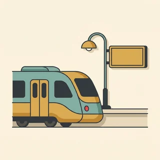
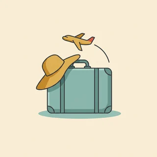

deutschoderwas · Sprechclub · Woche 7 · Strang A · Teil 1 · Montag, 26. Oktober
Unterwegs mit Bus und Bahn: Ticket, Fahrplan, umsteigen
Der deutsche Nahverkehr ist gut — und er erklärt sich nicht von selbst. Auf dem Fahrplan stehen Abkürzungen, die niemand übersetzt, die Durchsage rattert schnell durch, und wer einmal falsch aussteigt, steht plötzlich in einem Ort, von dem er noch nie gehört hat. Heute holen wir uns die Wörter und die Sätze dafür.
Dein Niveau
Gleiches Thema, andere Sätze. Wechsle jederzeit — probier ruhig beide Seiten aus.
Vom Automaten bis zum Sitzplatz
Zwischen „Ich möchte nach Köln“ und „Ich sitze im Zug nach Köln“ liegen vier Schritte: kaufen, den Bahnsteig finden, einsteigen, unterwegs vielleicht umsteigen. Für jeden Schritt gibt es ein paar feste Sätze — und die sind heute dran.
Wie kommst du normalerweise in die Stadt?
Kaufst du dein Ticket am Automaten oder mit dem Handy?
Wann bist du das letzte Mal Zug gefahren?
Was findest du am deutschen Nahverkehr gut, was schwierig?
Wie unterscheidet sich das von deinem Heimatland?
In welcher Situation hast du dich zuletzt nicht getraut zu fragen?
🔑 Der Satz, mit dem du überall durchkommst:„Entschuldigung, fährt der hier nach …?“ Kurz, höflich, und man kann nur mit ja oder nein antworten. Damit rettest du dich an jeder Haltestelle in Deutschland — auch wenn du sonst gerade kein Wort findest.
Ab, an, Gl. — was auf dem Fahrplan wirklich steht
Auf der Anzeigetafel ist kaum ein Wort ausgeschrieben. ab heißt Abfahrt, an heißt Ankunft, Gl. ist das Gleis. Und die Uhrzeiten stehen immer im Vierundzwanzig-Stunden-Format: 14:37 heißt zwar „vierzehn Uhr siebenunddreißig“, gesprochen wird aber oft etwas ganz anderes.
Wie sagst du 14:37 auf Deutsch?
Was bedeutet ab und was an?
Wo steht das Gleis auf der Anzeige?
Wann benutzt man die offizielle Uhrzeit, wann die gesprochene?
Welche Abkürzung hat dich schon einmal verwirrt?
Was tust du, wenn du die Durchsage nicht verstehst?
💡 Zwei Zeiten, ein Zug: Am Automaten und auf der Tafel steht 14:37 — offiziell, eindeutig, nie missverständlich. Im Gespräch sagen die meisten aber „kurz vor zwanzig vor drei“. Beides musst du verstehen, sprechen kannst du ruhig immer die offizielle Form. Die ist nie falsch.
Zwölf Wörter vom Bahnsteig bis zur Durchsage
Sagt jedes Wort laut — mit Artikel. Und gleich einen Satz hinterher: Wann hast du dieses Wort zuletzt gebraucht?
die Fahrkarte
„Eine Fahrkarte nach Köln, bitte.“
💡 Auch das Ticket — das versteht jeder. Und der ganze Satz am Schalter besteht nur aus drei Teilen: Eine Fahrkarte + nach Köln + bitte. Mehr braucht es nicht.

der Zug
„Der Zug fährt um 14:37 ab.“
💡 Plural: die Züge. Und Achtung bei der Präposition: Man fährt mit dem Zug, aber man sitzt im Zug. Beides mit Dativ, nur eben verschiedene Wörter.
der Bus
„Der Bus kommt gleich.“
💡 Plural: die Busse, mit zwei s. Im Alltag hörst du oft nur die Nummer: Nimm die 43 — das ist die Buslinie, und die Linie ist weiblich: die Linie 43.
die Straßenbahn
„Mit der Straßenbahn bist du schneller.“
💡 Regional heißt sie auch die Tram oder die Elektrische. In manchen Städten fährt sie unterirdisch weiter, dann steht auf dem Schild U. Verwechsle das nicht mit der S-Bahn, die ins Umland fährt.
die Haltestelle
„Ich steige an der nächsten Haltestelle aus.“
💡 Für den Zug sagt man der Bahnhof, für Bus und Straßenbahn die Haltestelle. Und die feste Wendung heißt an der Haltestelle — mit Dativ, weil man dort steht und nicht dorthin geht.
der Bahnsteig
„Der Zug fährt heute von Bahnsteig drei.“
💡 Auf der Anzeige steht dafür meistens Gl. — das ist das Gleis. Streng genommen ist der Bahnsteig der Boden zum Stehen und das Gleis die Schiene, aber im Alltag benutzt jeder beides gleich.
umsteigen
„In Hamm müssen Sie umsteigen.“
💡 Trennbar: Ich steige in Hamm um. Und im Perfekt mit sein, weil man sich dabei bewegt: Ich bin umgestiegen. Dieselbe Familie: einsteigen und aussteigen.
die Verspätung
„Der Zug hat zwanzig Minuten Verspätung.“
💡 Man hat Verspätung, man ist sie nicht. Und das Verb dazu ist reflexiv: sich verspäten. Vorsicht bei der Ansage „voraussichtlich“ — das heißt: Es kann noch länger dauern.
die Durchsage
„Die Durchsage habe ich nicht verstanden.“
💡 Sie kommt schnell und in schlechter Tonqualität — auch Muttersprachler verstehen oft nur die Hälfte. Der Trick: Achte nur auf drei Dinge — Ortsname, Gleisnummer, Uhrzeit. Der Rest ergibt sich.
der Schalter
„Am Schalter kann man auch fragen.“
💡 Wenn der Automat dich überfordert: Der Schalter heißt in großen Bahnhöfen das Reisezentrum. Dort ist es oft teurer als am Automaten — dafür bekommst du eine Antwort auf deine Frage.
die Uhrzeit
„Wie ist die Uhrzeit für die Rückfahrt?“
💡 Im Fahrplan immer vierundzwanzig Stunden: 14:37. Gesprochen sagen viele „zwanzig vor drei“. Wenn du unsicher bist, sag ruhig die offizielle Form — die versteht jeder und sie ist nie zweideutig.

die Reise
„Die Reise dauert drei Stunden.“
💡 Der Unterschied zu die Fahrt: Eine Fahrt ist die einzelne Strecke, eine Reise das Ganze mit allem drum herum. Und der Gruß dazu: „Gute Reise!“ — nicht gute Fahrt, das sagt man nur beim Autofahren.
💡 Spiel „Die Durchsage“: Einer liest eine Durchsage sehr schnell und undeutlich vor — „Information für die Reisenden auf Gleis vier: Der ICE nach Berlin hat heute etwa fünfzehn Minuten Verspätung.“ Die anderen dürfen nur drei Dinge herausschreiben: Ort, Gleis, Zeit. Danach vergleichen. Ihr werdet merken: Drei Wörter reichen.
Fährt der, wo halte ich, wann bin ich da?
Fast alles, was man unterwegs fragt, gehört in eine von drei Gruppen. Wenn du zu jeder Gruppe einen Satz sicher kannst, kommst du überall durch — auch ohne den Rest des Gesprächs zu verstehen.
🧭
die Richtung
fährt das Ding überhaupt dorthin?
Fährt der hier nach Köln?
📍
der Ausstieg
wo muss ich raus oder umsteigen?
Wo muss ich aussteigen?
⏰
die Zeit
wann fährt er, wann bin ich da?
Wann kommt der Zug in Köln an?
✅ Kommt sicher an
Entschuldigung, fährt der hier nach Köln?
Warum das funktioniertEine Ja-Nein-Frage. Die Antwort ist kurz und du verstehst sie garantiert — auch wenn dein Gegenüber schnell spricht. Und Entschuldigung am Anfang öffnet in Deutschland jede Tür.
❌ Wird schwierig
Können Sie mir bitte erklären, wie ich am besten nach Köln komme?
Das ProblemDie Frage ist höflich, aber sie lädt zu einer langen Antwort ein — mit drei Umstiegen, zwei Alternativen und einem Tipp. Am Bahnsteig, mit einfahrendem Zug, hast du davon nichts.
✅ Bringt dich weiter
Wo muss ich umsteigen?
Warum das gut istDu fragst nach einem Wort: einem Ortsnamen. Den kannst du dir merken, aufschreiben oder auf dem Handy nachschauen. Eine Frage, eine Information.
❌ Hilft dir nicht
Ist das kompliziert?
Das ProblemDarauf gibt es nur ach, geht schon. Das ist freundlich gemeint und sagt dir nichts. Frag nie nach einem Gefühl, wenn du eine Information brauchst.
✅ Sichert dich ab
Können Sie mir Bescheid sagen, wenn wir da sind?
Warum das klug istWenn du unsicher bist, ob du die Haltestelle erkennst, ist das der beste Satz im ganzen Zug. Fast niemand sagt nein — und du kannst dich für zwanzig Minuten entspannen.
❌ Sichert nichts
Ich hoffe, ich verpasse es nicht.
Das ProblemEin Satz zu sich selbst. Der Mensch neben dir würde gern helfen, weiß aber nicht, dass du Hilfe brauchst — bis du fragst, ist er einfach nur ein Fremder im Zug.
Drei Sätze, mehr brauchst du nicht:
Vor dem Einsteigen:Entschuldigung, fährt der hier nach …?
Im Zug:Wo muss ich aussteigen, wenn ich nach … will?
Wenn du unsicher bist:Können Sie mir Bescheid sagen, wenn wir da sind?
Und wenn du die Antwort nicht verstehst:Entschuldigung, noch mal langsam bitte?
Ein Gedanke, der vielen hilft: Die meisten Menschen am Bahnsteig helfen gern — es fragt sie nur selten jemand. Und ein Ortsname und eine Zahl reichen als Antwort völlig aus.
🎯 Zu zweit, eine Minute: Einer ist Fahrgast, einer steht am Bahnsteig. Der Fahrgast stellt drei Fragen — Richtung, Ausstieg, Zeit — und der andere antwortet mit genau einem Wort oder einer Zahl. Danach tauschen.
Vier Bausteine, und du bist im Zug
Kaufen, fragen, einsteigen, aussteigen. Vier Handgriffe in genau der Reihenfolge, in der sie unterwegs vorkommen.
1 · 🎫 Kaufen Eine Fahrkarte nach …, bitteEinfach oder hin und zurück?Was kostet das?Zweite Klasse, bitte
So klingt esEine Fahrkarte nach Köln, bitte — einfach.
2 · 🧭 Fragen Fährt der hier nach …?Von welchem Gleis?Muss ich umsteigen?Wann fährt der nächste?
So klingt esEntschuldigung, fährt der hier nach Köln?
3 · 🚪 Einsteigen Ist hier noch frei?Darf ich mal durch?Entschuldigung, das ist mein PlatzIch steige hier ein
So klingt esEntschuldigung, ist hier noch frei?
4 · 🛑 Aussteigen Ich steige an der nächsten ausDarf ich mal vorbei?Wo muss ich aussteigen?Sind wir schon da?
So klingt esEntschuldigung, darf ich mal vorbei? Ich steige an der nächsten aus.
1 · 🎫 Genauer kaufen Gibt es eine günstigere Verbindung?Ist das Ticket auch im Bus gültig?Brauche ich eine Reservierung?Bis wann gilt die Karte?
So klingt esGibt es eine günstigere Verbindung, wenn ich eine Stunde später fahre?
2 · 🧭 Die Verbindung klären Wie oft muss ich umsteigen?Wie viel Zeit habe ich zum Umsteigen?Ist der Anschluss noch zu schaffen?Fährt der durch oder muss ich wechseln?
So klingt esWie viel Zeit habe ich in Hamm zum Umsteigen?
3 · 🗣️ Im Zug klarkommen Entschuldigung, ich glaube, das ist mein reservierter PlatzKönnen Sie mir Bescheid sagen, wenn wir da sind?Ich habe die Durchsage nicht verstandenWissen Sie, ob wir Verspätung haben?
So klingt esIch habe die Durchsage nicht verstanden — ging es um unseren Zug?
4 · 🔄 Wenn etwas schiefgeht Ich habe meinen Anschluss verpasstWas kann ich jetzt machen?Gilt mein Ticket auch für den späteren Zug?Wo finde ich jemanden vom Personal?
So klingt esIch habe meinen Anschluss verpasst — gilt mein Ticket auch für den nächsten Zug?
Verb das Ziel die Uhrzeit Höflichkeit
📣 Sofort anwenden: Denk an eine Fahrt, die du diese Woche machst. Sag alle vier Sätze laut — kaufen, fragen, einsteigen, aussteigen. Der zweite ist der, den die meisten weglassen, und genau der verhindert das falsche Aussteigen.
Vier Situationen — zwei Runden
Runde 1: Lest den Dialog zu zweit laut. Runde 2: Klappt die Zeilen zu und spielt ihn frei — mit eurer eigenen Stadt und eurem eigenen Ziel.
Dialog 1 · „Am Schalter“
Du kaufst eine Fahrkarte und klärst dabei gleich zwei Dinge: den Preis und das Gleis.
B
Guten Tag, eine Fahrkarte nach Köln, bitte.
🗣️ Gruß, Wunsch, bitte. Mehr braucht der erste Satz nicht — alles Weitere fragt der Mensch am Schalter von selbst.tippen = Hilfe zeigen
A
Einfach oder hin und zurück?
B
Hin und zurück, bitte. Muss ich umsteigen?
🗣️ Antworten und sofort die eigene Frage anhängen. So bekommst du zwei Informationen in einem Gespräch.tippen = Hilfe zeigen
A
Einmal in Hamm. Das macht dreiundvierzig Euro.
B
Und von welchem Gleis fährt der Zug?
🗣️ von welchem Gleis — eine Frage, eine Zahl als Antwort. Genau die Art Frage, die man auch versteht, wenn es laut ist.tippen = Hilfe zeigen
A
Gleis sieben, in zwölf Minuten.
B
Danke schön. Dann beeile ich mich.
🗣️ Freundlich abschließen. Danke schön ist der Standardgruß am Schalter, kürzer als vielen Dank und genauso höflich.tippen = Hilfe zeigen
Dialog 2 · „An der Haltestelle“
Du stehst an der Haltestelle und bist nicht sicher, ob der Bus richtig ist. Du fragst die Person neben dir.
B
Entschuldigung, fährt der 43er hier zum Hauptbahnhof?
🗣️ Entschuldigung und dann eine Ja-Nein-Frage. Die Nummer der Linie sagt man einfach mit -er dahinter: der 43er.tippen = Hilfe zeigen
A
Ja, aber nur bis halb acht. Danach fährt der 12er.
B
Ah, gut zu wissen. Und wie viele Haltestellen sind das ungefähr?
🗣️ ungefähr nimmt der Frage die Schärfe — dein Gegenüber muss nicht genau zählen und antwortet trotzdem.tippen = Hilfe zeigen
A
So sechs oder sieben. Zehn Minuten etwa.
B
Danke! Können Sie mir Bescheid sagen, wenn wir da sind?
🗣️ Der Satz, der jede Fahrt entspannt macht. Fast niemand sagt nein — und du musst nicht mehr auf jedes Schild starren.tippen = Hilfe zeigen
A
Mache ich, kein Problem.
Dialog 3 · „Die Durchsage verstehen“
Eine Durchsage rattert durch die Halle. Du hast sie nicht verstanden und fragst nach — ohne dich zu entschuldigen.
B
Entschuldigung, ich habe die Durchsage nicht verstanden. Ging es um den Zug nach Köln?
🗣️ Nicht mein Deutsch ist schlecht, sondern eine sachliche Frage. Auch Muttersprachler verstehen Durchsagen oft nicht.tippen = Hilfe zeigen
A
Ja, der hat zwanzig Minuten Verspätung.
B
Und fährt er noch von Gleis sieben?
🗣️ Die zweite wichtige Information gleich hinterher. Bei Verspätungen wird oft auch das Gleis geändert — genau daran scheitern die meisten.tippen = Hilfe zeigen
A
Das haben sie nicht gesagt. Schauen Sie am besten auf die Anzeige.
B
Mache ich. Vielen Dank!
🗣️ Kurz bedanken und selbst nachschauen. Man muss nicht alles im Gespräch klären — die Anzeigetafel ist geduldiger als jeder Mensch.tippen = Hilfe zeigen
Dialog 4 · „Umsteigen unter Zeitdruck“
Dein Zug hatte Verspätung, und jetzt sind es nur noch vier Minuten bis zum Anschluss. Du fragst schnell und klar.
B
Entschuldigung, ich muss nach Köln umsteigen. Schaffe ich den Anschluss noch?
🗣️ Zuerst das Ziel, dann die Frage. So weiß dein Gegenüber sofort, worum es geht, und kann in einem Satz antworten.tippen = Hilfe zeigen
A
Knapp. Gleis elf, gleich gegenüber.
B
Gleis elf, gegenüber. Danke!
🗣️ Die Information laut wiederholen. Das kostet zwei Sekunden und du merkst sofort, wenn du etwas falsch verstanden hast.tippen = Hilfe zeigen
A
Beeilen Sie sich, der fährt in drei Minuten!
B
Und wenn ich ihn verpasse — gilt mein Ticket auch für den nächsten?
🗣️ Vorausdenken, solange noch jemand da ist. Diese eine Frage erspart dir am Zielbahnhof eine lange Diskussion.tippen = Hilfe zeigen
A
Bei Verspätung ja. Aber jetzt laufen Sie!
🎭 Und jetzt ihr: Spielt Dialog 2 mit eurer eigenen Stadt und eurer echten Buslinie. Regel: Der Fahrgast muss die Antwort einmal laut wiederholen, bevor er sich bedankt.
🧩 Ein-, aus-, um-: die Verben, aus denen jede Fahrt besteht
einsteigen, aussteigen, umsteigen, abfahren, ankommen — fünf Verben, ein Bauplan. Alle sind trennbar, und alle machen im Satz dasselbe: Der vordere Teil rutscht ans Ende. Wer das einmal sieht, sieht es überall.
Trennbare Verben bestehen aus zwei Teilen: einer Vorsilbe (ein-, aus-, um-, ab-, an-) und einem Verb (steigen, fahren, kommen). Im einfachen Satz gehen sie auseinander: Ich steige in Hamm um. Das Verb steht auf Platz zwei, die Vorsilbe ganz am Ende. Nur wenn ein zweites Verb dazukommt — ein Modalverb oder das Perfekt —, bleiben sie zusammen: Ich muss in Hamm umsteigen. · Ich bin in Hamm umgestiegen.
🚪einsteigen = hineinIch steige vorne ein.
▾
🛑aussteigen = herausIch steige an der nächsten aus.
▾
🔄umsteigen = wechselnIn Hamm steige ich um.
▾
🕐abfahren und ankommenEr fährt um zwei ab und kommt um vier an.
Wer?Ich
Verb auf Platz zweisteige
Wo?in Hamm
Vorsilbe ans Endeum.
Zusammen oder auseinander?
Es gibt genau drei Fälle, und du erkennst sie an einem Blick: Steht sonst noch ein Verb im Satz? Dann bleibt die Vorsilbe dran. Steht keins da, geht sie ans Ende.
1️⃣
Einfacher Satz
Vorsilbe ganz ans Ende
Ich steige in Hamm um.
2️⃣
Mit Modalverb
bleibt zusammen, hinten
Ich muss in Hamm umsteigen.
3️⃣
Im Perfekt
ge- kommt in die Mitte
Ich bin in Hamm umgestiegen.
Ich steige in Hamm umIch muss in Hamm umsteigenIch bin in Hamm umgestiegenDer Zug fährt um 14:37 abDer Zug soll um 14:37 abfahrenWann kommen wir in Köln an?
Die Uhrzeit im Fahrplan und im Gespräch
Zwei Systeme für dieselbe Zeit. Auf der Tafel steht die offizielle Form, gesprochen hörst du meistens die andere. Verstehen musst du beide, sprechen darfst du immer die offizielle.
Tippe die Teile in der richtigen Reihenfolge an. Denk an die eine Frage: Steht noch ein zweites Verb im Satz? Dann bleibt die Vorsilbe dran.
📖 Und jetzt im Zusammenhang
Eine Fahrt, bei der fast alles schiefging und am Ende doch geklappt hat. Wähle für jede Lücke das passende Wort.
Zwei Regeln, und du liegst fast immer richtig:
Hörbar: Bei trennbaren Verben liegt die Betonung auf der Vorsilbe — ÚMsteigen, ÁBfahren, ÉINsteigen. Sprich es laut, dann hörst du es.
Die häufigen trennbaren Vorsilben: ab-, an-, auf-, aus-, ein-, mit-, nach-, vor-, zu-, um-. Alle sind auch allein ein Wort.
Die untrennbaren: be-, ge-, er-, ver-, zer-, ent-, emp-, miss-. Die stehen nie allein und werden nie betont.
Im Perfekt sieht man es sofort: trennbar bekommt das ge- in die Mitte (umgestiegen), untrennbar gar keins (verstanden).
Ein Paar zum Merken, bei dem beides vorkommt: „Ich bin in Hamm umgestiegen und habe die Durchsage nicht verstanden.“ Vorne trennbar mit ge- in der Mitte, hinten untrennbar ganz ohne.
🎭 Drei Situationen zu zweit
Einer ist unterwegs, einer hilft. Danach tauschen — und beim zweiten Mal ohne Notizen. Regel für alle drei: Die Antwort muss einmal laut wiederholt werden.
1 · Am Automaten
A steht vor dem Fahrkartenautomaten und kommt nicht weiter. B wartet dahinter und hilft. A muss Ziel, Art der Fahrkarte und Preis klären.
Entschuldigung, können Sie mir kurz helfen?Ich möchte nach KölnEinfach oder hin und zurück?Was kostet das?
Ich komme mit dem Automaten nicht zurechtGibt es eine günstigere Verbindung?Ist das Ticket auch im Bus gültig?Brauche ich eine Reservierung?
✅ Eine gute Runde enthältA hat um Hilfe gebeten, statt zu warten, bis jemand von selbst kommt. Ziel, Ticketart und Preis sind geklärt, und A hat die Zahl einmal wiederholt.
2 · Falscher Bus
A sitzt im Bus und merkt nach fünf Minuten, dass die Richtung nicht stimmt. B ist Fahrgast. A muss herausfinden, wo man aussteigt und wie man zurückkommt — ohne in Panik zu geraten.
Entschuldigung, fährt der zum Hauptbahnhof?Oh, dann bin ich falschWo soll ich aussteigen?Und wie komme ich zurück?
Ich glaube, ich sitze im falschen BusWo kann ich am besten wechseln?Gilt mein Ticket dafür noch?Wie lange fährt der noch?
✅ Eine gute Runde enthältA hat gefragt, sobald der Verdacht da war, nicht erst nach zehn Minuten. Beide Punkte sind geklärt: wo raus und wie zurück.
3 · Der Anschluss ist weg
A hat wegen einer Verspätung den Anschlusszug verpasst und spricht jemanden vom Personal an. B ist beim Personal und hat es eilig. A muss in drei Sätzen sagen, was los ist und was er braucht.
Ich habe meinen Anschluss verpasstDer Zug hatte VerspätungWas kann ich jetzt machen?Wann fährt der nächste?
Mein Anschluss ist mir wegen der Verspätung weggefahrenGilt mein Ticket auch für den späteren Zug?Muss ich mir das irgendwo bestätigen lassen?Gibt es eine Alternative über eine andere Strecke?
✅ Eine gute Runde enthältA hat mit dem Problem angefangen und nicht mit der Vorgeschichte. In drei Sätzen standen: was passiert ist, was A braucht, und wann es weitergeht.
🎴 Sprechkarten
Zieh eine Karte und sprich mindestens vier Sätze am Stück.
Deine Aufgabe
Tippe auf den Knopf.
⏱️ Die 90-Sekunden-Challenge
Eine Fahrt, anderthalb Minuten, freies Sprechen. Nicht perfekt — sondern so, dass du am Ziel ankommst und unterwegs einmal gefragt hast.
Dein Wort
die Fahrkarte
1:30
Erzähl die Fahrt der Reihe nach, dann trägt dich die Zeit:
Wo fängst du an und wohin willst du? Ich fahre von … nach …
Wie kaufst du die Fahrkarte? am Automaten / am Schalter / mit dem Handy
Steigst du um? In … muss ich umsteigen.
Was ist unterwegs passiert? Der Zug hatte Verspätung. / Ich habe gefragt, ob …
Und wenn dir mitten im Satz ein Wort fehlt, sag es einfach: „Wie heißt das noch mal — das, wo der Zug hält?“ Umschreiben ist keine Notlösung, sondern genau das, was Muttersprachler auch tun.
⏱️ Spielregel: In jeder Runde müssen zwei trennbare Verben vorkommen (einsteigen, aussteigen, umsteigen, abfahren, ankommen) und eine Uhrzeit. Wer halb drei mit 15:30 verwechselt, gibt weiter.
✅ Sitzt es schon?
8 Fragen. Tippe auf deine Antwort — die Erklärung kommt sofort.
✍️ Lückentext
Wähle in jeder Lücke das passende Wort.
📣 Danach laut: Jeder nennt reihum eine Uhrzeit im Fahrplanformat, der Nachbar sagt sie sofort gesprochen — und umgekehrt. Wer stockt, gibt weiter.
📮 Deine Hausaufgabe bis Mittwoch
Vier kleine Aufgaben, zusammen etwa 20 Minuten. Am Mittwoch geht es weiter: nach dem Weg fragen und mit Verspätungen umgehen.
💡 Warum das hilft: Bus und Bahn sind für die meisten der erste Ort, an dem sie in Deutschland wirklich sprechen müssen — mit Fremden, unter Zeitdruck, ohne Vorbereitung. Wer hier drei Sätze sicher hat, merkt schnell: Es geht. Und dieses Gefühl nimmt man mit in alle anderen Situationen.
0 von 0 Aufgaben geschafft.
So sehen die beiden Uhrzeiten nebeneinander aus:
14:37 → vierzehn Uhr siebenunddreißig · gesprochen: kurz vor zwanzig vor drei
14:30 → vierzehn Uhr dreißig · gesprochen: halb drei
14:15 → vierzehn Uhr fünfzehn · gesprochen: Viertel nach zwei
14:45 → vierzehn Uhr fünfundvierzig · gesprochen: Viertel vor drei
09:05 → neun Uhr fünf · gesprochen: fünf nach neun
Der eine Fehler, den fast alle machen: halb drei ist 14:30, nicht 15:30. Im Deutschen zählt man zur nächsten vollen Stunde hin, nicht von der letzten weg.
So ist eine Beschwerde aufgebaut, die gelesen wird:
Der Betreff: Zug, Datum, Strecke. Verspätung ICE 512 am 26.10., Hagen–Köln.
Was passiert ist: zwei Sätze, mit Uhrzeiten. Keine Vorgeschichte, keine Empörung.
Die Folge: was das für dich bedeutet hat — Anschluss verpasst, zwei Stunden später da.
Dein Anliegen: konkret. Ich bitte um Erstattung der Fahrkarte.
Die Angaben: Buchungsnummer, Name, Datum — alles, was der andere sonst suchen müsste.
Und ein Fehler, den fast alle machen: zu viel Ärger im Text. Wer sachlich schreibt, bekommt schneller eine Antwort. Der Ärger gehört ins Gespräch mit Freunden, nicht in den Brief.
📬 Abgabe: Schick deine Sprachnachricht und die Uhrzeiten bis Dienstagabend. Ich achte besonders auf die trennbaren Verben — und darauf, ob halb richtig sitzt.
🔜 Am Mittwoch, Teil 2:Nach dem Weg fragen und mit Verspätung umgehen. Heute ging es darum, in den Zug zu kommen. Am Mittwoch darum, was passiert, wenn er nicht fährt — und wie man sich zu Fuß durchfragt.